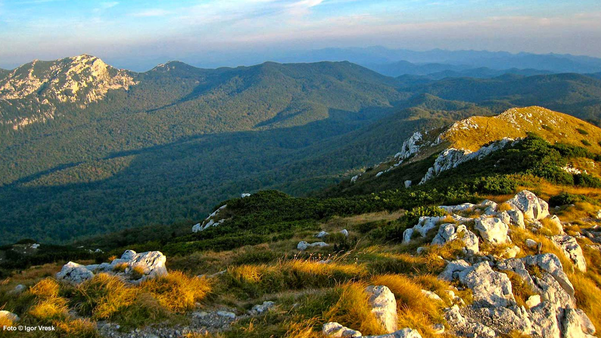
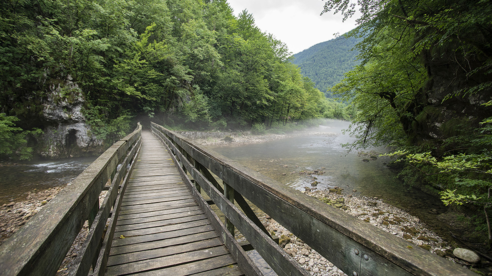

Risnjak




Nacionalni park Risnjak nalazi se u srcu Gorskog kotara i čuva jedan od najočuvanijih šumskih ekosustava u Hrvatskoj. To je područje gdje se planinski masivi, šume i krški oblici spajaju u skladan i miran krajolik. Risnjak je poznat po čistom zraku, bogatim šumama i osjećaju tišine koji posjetitelje prati već na prvim koracima. Ovdje se priroda doživljava polako i duboko, bez naglih kontrasta, ali s mnogo detalja koji otkrivaju njezinu slojevitost.
Središnji dio parka čini masiv Risnjaka, s vrhom Veliki Risnjak koji nudi široke poglede na Kvarner, Gorski kotar i unutrašnjost Hrvatske. Uspon na vrh nije tehnički zahtjevan, ali pruža pravi planinski doživljaj. Uz njega se nalazi i planinarski dom, mjesto za odmor i okupljanje, koje je postalo simbol parkovnih staza. U blizini se nalazi i Snježnik, vrh koji dodatno upotpunjuje planinsku panoramu.
Šume Risnjaka pretežno su bukovo-jelove, a u višim dijelovima pojavljuju se smreke. Takve šume stvaraju stabilan i raznolik ekosustav u kojem se susreću brojne biljne vrste, od mahovina i paprati do planinskih cvjetnica. Proljeće donosi bogato zelenilo, ljeto ugodnu hladovinu, jesen spektakl boja, a zima smirenu tišinu pod snijegom. Svaka sezona ima svoje posebnosti i pruža drugačiji doživljaj planine.
Risnjak je poznat po velikim zvijerima, među kojima se ističe ris, simbol parka. Osim risa, u šumama obitavaju i medvjed, vuk te brojne druge životinje. Iako je susret s njima rijedak, sama činjenica da žive u ovom prostoru govori o visokoj očuvanosti ekosustava. Za mnoge posjetitelje to je posebna vrijednost, jer osjećaj prisutnosti divljine daje parku autentičan karakter.
Park je značajan i zbog izvora rijeke Kupe. Kupa izvire u podnožju Snježnika i predstavlja važan hidrološki fenomen. Voda je iznimno čista i hladna, a izvor je okružen gustim zelenilom. Ovdje se može osjetiti snaga krških voda koje izlaze na površinu i stvaraju početak velikog riječnog toka. Posjet ovom mjestu često se doživljava kao miran, gotovo meditativan trenutak u prirodi.
Jedna od najpoznatijih staza u parku je poučna staza Leska, koja je idealna za obitelji i posjetitelje koji žele laganu šetnju uz edukativne sadržaje. Uz stazu se nalaze informativne ploče koje objašnjavaju šumske zajednice, životinjski svijet i geološke procese. Ovaj dio parka posebno je prikladan za one koji žele bolje razumjeti prirodu bez zahtjevnog planinarenja.
Risnjak je i područje izraženih krških pojava. Ponikve, škrape i jame sastavni su dio krajolika, a mnoge od njih nisu vidljive na prvi pogled. Krški reljef stvara raznolikost mikroklime i staništa, što dodatno povećava biološku raznolikost. U nekim dijelovima nalaze se planinske livade i proplanci, koji su važni za oprašivače i brojne biljne vrste. Takav mozaik staništa čini Risnjak jedinstvenim.
Planinarske rute u parku prilagođene su različitim razinama iskustva. Osim staze prema Velikom Risnjaku, postoje i duže ture prema Snježniku ili kroz dublje šumske dijelove. Kretanje kroz park pruža osjećaj postupnog ulaska u planinski svijet, a tišina šume i povremeni pogledi na otvorene proplanke stvaraju ritam koji umiruje. Posjetitelji često ističu da se u Risnjaku lakše usporava i usklađuje s prirodom.
Klima u parku je planinska, s hladnijim zimama i svježim ljetima. Snijeg se zadržava dulje nego u nizini, što omogućuje zimske šetnje i poseban doživljaj šuma pod bijelim pokrivačem. Ljeti je park ugodno svjež, što ga čini privlačnim za bijeg od vrućina. Zbog toga Risnjak ima ravnomjernu posjećenost tijekom cijele godine, s posebnim naglaskom na proljeće i jesen.
Park se aktivno bavi očuvanjem prirode i znanstvenim istraživanjima. Praćenje velikih zvijeri, analiza šumskih zajednica i očuvanje krških voda dio su svakodnevnog rada stručnjaka. Edukativni programi i radionice usmjereni su na podizanje svijesti o važnosti prirodne baštine. Takav pristup osigurava da se Risnjak ne doživljava samo kao turističko odredište, već i kao važno područje zaštite i znanja.
U posjetu Risnjaku važna je priprema i poštivanje pravila. Kretanje označenim stazama, prikladna obuća i dostatna količina vode osnovni su uvjeti za ugodan obilazak. Park je prostor mira i tišine, pa se od posjetitelja očekuje odgovorno ponašanje i poštivanje prirodnog ritma. Takav odnos omogućuje da priroda ostane očuvana i da se posjetitelji osjećaju sigurno i dobrodošlo.
Risnjak ima važnu ulogu u zaštiti pitke vode i šumskih resursa. Šume djeluju kao prirodni filteri koji čuvaju čistoću izvora i stabilnost tla, a svaki zahvat u prostoru pažljivo se planira. Zbog toga je park i učionica održivog upravljanja prirodom, gdje se pokazuje kako očuvanje okoliša može ići ruku pod ruku s posjećivanjem i rekreacijom. Posjetitelji tako uče da priroda nije samo prostor za odmor, nego i sustav koji zahtijeva brigu.
Posebnost Risnjaka je i osjećaj prijelaza između kontinentalnog i primorskog svijeta. Iako je park duboko u unutrašnjosti, u vedrim danima s vrhova se može nazrijeti morski horizont. Ta blizina mora i planine stvara posebnu klimu i miješanje utjecaja, što se vidi i u biljnim zajednicama. U šumama se susreću vrste tipične za hladnije krajeve, ali i one koje vole blažu klimu, što dodatno obogaćuje prirodnu sliku.
Za one koji traže dulji boravak u prirodi, park nudi mogućnost višednevnih planinarskih ruta i obilaska šireg područja. Takva iskustva omogućuju dublje upoznavanje planine, noći u planinarskim skloništima i kretanje kroz različite nadmorske visine. Boravak u prirodi na ovaj način često mijenja perspektivu, jer se ritam usklađuje s vremenom i terenom. Risnjak je idealan za takav oblik doživljaja jer je siguran, ali istodobno dovoljno divlji.
Park je tijekom godina postao simbol očuvane šume u Hrvatskoj. Njegova uloga nije samo lokalna, već i regionalna, jer predstavlja jedan od rijetkih prostora gdje velike zvijeri i bogate šumske zajednice žive u stabilnoj ravnoteži. Takva ravnoteža ne dolazi sama, već je rezultat dugotrajnog rada i zaštite. Posjet Risnjaku stoga nosi i poruku o tome koliko je važno čuvati prirodne vrijednosti.
Zanimljivo je i koliko se zvukovi u Risnjaku razlikuju od onih u nižim područjima. Umjesto gradske buke, ovdje se čuju šuštanje lišća, udarci djetlića i povremeni šum vjetra kroz krošnje. Takva zvučna kulisa stvara osjećaj dubokog mira, koji je teško pronaći u svakodnevnom životu. Upravo taj mir često privlači posjetitelje koji žele kratki odmak od užurbanosti.
Risnjak je odličan primjer kako se priroda može doživjeti bez velikih zahvata i infrastrukture. Staze su jednostavne i uklopljene u okoliš, a vidikovci su često prirodni proplanci koji ne narušavaju krajolik. Ta nenametljiva organizacija prostora omogućuje posjetitelju da se osjeća kao dio prirode, a ne kao promatrač izvana. Takav doživljaj ostavlja snažan dojam i potiče poštovanje prema planinskim ekosustavima.
Obrazovni programi u parku često uključuju učenike i studente koji dolaze učiti o šumskim zajednicama i zaštiti prirode. Takva terenska nastava omogućuje izravno iskustvo, gdje se teorija povezuje s promatranjem u prirodnom okruženju. To je posebno važno za razumijevanje osjetljivosti planinskih ekosustava i uloge čovjeka u njihovom očuvanju. Na taj način park ne pruža samo rekreaciju, nego i dugoročnu vrijednost kroz znanje.
Fotografi posebno cijene promjenjivu svjetlost u šumama Risnjaka. Sunčeve zrake često prolaze kroz krošnje i stvaraju igru sjena na stazama, dok magla i niski oblaci daju planini tajanstveni izgled. Takvi prizori čine svaki posjet drugačijim i potiču na ponovno vraćanje.
Risnjak je mjesto gdje se priroda osjeća blisko i iskreno. Šumski mir, čisti zrak i prostrane staze stvaraju doživljaj koji ostaje dugo u sjećanju. Park ne impresionira dramatičnim spektaklima, već svojom postojanom ljepotom i ravnotežom. Upravo ta smirenost i osjećaj sklada čine Risnjak posebnim, a svaki posjet pruža priliku za novi pogled na planinu i prirodu.